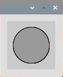

Nota
Ciao, benvenuto nella Community di Facebook dedicata agli appassionati di SunFounder Raspberry Pi, Arduino e ESP32! Approfondisci le tue conoscenze su Raspberry Pi, Arduino e ESP32 insieme ad altri appassionati.
Perché unirsi a noi?
Supporto Esperto: Risolvi problematiche post-vendita e sfide tecniche con l’aiuto della nostra comunità e del nostro team.
Impara e Condividi: Scambia consigli e tutorial per migliorare le tue competenze.
Anteprime Esclusive: Ottieni accesso anticipato agli annunci di nuovi prodotti e alle anteprime.
Sconti Speciali: Approfitta di sconti esclusivi sui nostri prodotti più recenti.
Promozioni Festive e Giveaway: Partecipa a concorsi e promozioni speciali.
üëâ Sei pronto a esplorare e creare con noi? Clicca su [Qui] e unisciti subito!
Punto Lampeggiante
In questo progetto disegneremo un punto in Processing, che lampeggerà in sincronia con il LED. Costruisci il circuito come mostrato nel diagramma e avvia lo sketch.
Collegamenti

Sketch
import processing.io.*;
int ledPin = 17;
boolean state = true;
void setup() {
size(100, 100);
frameRate(2); //imposta il frame rate
GPIO.pinMode(ledPin, GPIO.OUTPUT); //imposta il pin ledPin su output
}
void draw() {
state = !state;
if (state==true) {
GPIO.digitalWrite(ledPin, GPIO.LOW); //accende il LED
fill(255, 0, 0); //imposta il colore di riempimento quando il LED è acceso
} else {
GPIO.digitalWrite(ledPin, GPIO.HIGH); //spegne il LED
fill(155); //imposta il colore di riempimento quando il LED è spento
}
ellipse(width/2, height/2, width*0.75, height*0.75);
}
Come funziona?
All’inizio dello sketch, è necessario importare la libreria di funzioni GPIO di Processing con import processing.io.*;, indispensabile per esperimenti con il circuito.
Il frame rate è la frequenza con cui le bitmap appaiono sulla finestra, espressa in hertz (Hz). In altre parole, rappresenta la frequenza con cui viene chiamata la funzione draw(). Impostando il frame rate a 2 in setup(), draw() verrà chiamata ogni 0,5s.
Ogni chiamata della funzione draw() inverte lo stato di state e poi lo verifica. Se il valore è true, il LED si accende e il pennello viene riempito di rosso; se è false, il LED si spegne e il pennello si riempie di grigio.
Dopo la valutazione, la funzione ellipse() disegna un cerchio. Nota che width e height sono variabili di sistema utilizzate per memorizzare la larghezza e l’altezza della finestra di visualizzazione.
Altri due punti da ricordare: quando usi i GPIO, è necessario usare la funzione GPIO.pinMode() per impostare lo stato INPUT/OUTPUT del pin, e successivamente usare GPIO.digitalWrite() per assegnare un valore (HIGH/LOW) al pin.
Nota
Cerca di evitare l’uso di delay() in draw() perché influenzerebbe il refresh della finestra di visualizzazione.
Per ulteriori informazioni, consulta il Processing Reference.